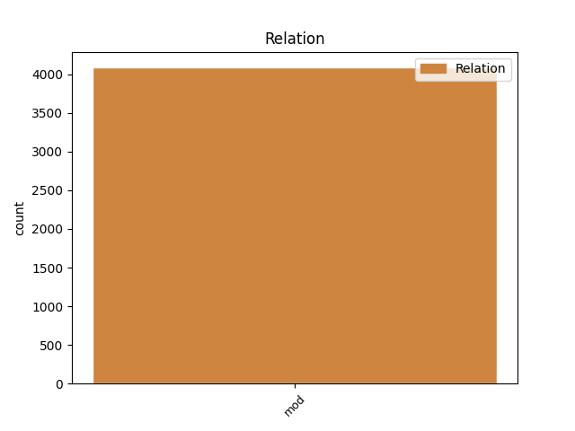
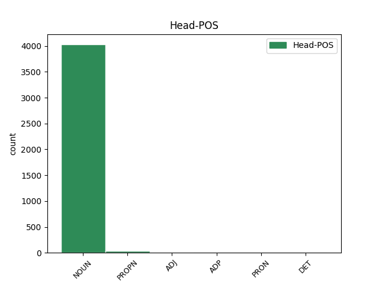
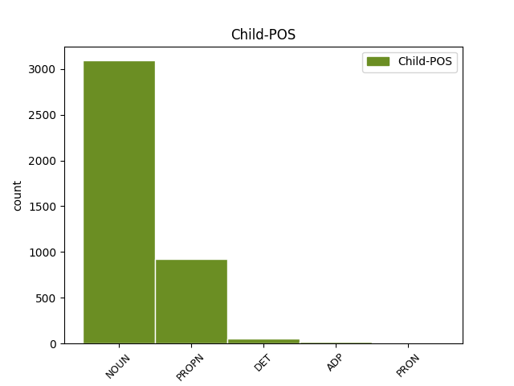

Distribution of features within this leaf



Agreement Rules sorted by frequency.
- When the dependent token is the modifer(mod) of the head token, and the dependent token is NOUN.
1 Slična _ _ _ _ 0 _ _ _
2 debata _ _ _ _ 0 _ _ _
3 o _ _ _ _ 0 _ _ _
4 korisnosti _ _ _ _ 0 _ _ _
5 naspram _ _ _ _ 0 _ _ _
6 štetnosti _ _ _ _ 0 _ _ _
7 nove _ _ _ _ 0 _ _ _
8 tehnologije _ _ _ _ 0 _ _ _
9 se _ _ _ _ 0 _ _ _
10 dugo _ _ _ _ 0 _ _ _
11 vodi _ _ _ _ 0 _ _ _
12 i _ _ _ _ 0 _ _ _
13 po _ _ _ _ 0 _ _ _
14 pitanju _ _ _ _ 0 _ _ _
15 opravdanosti opravdanost NOUN Ncfsg Case=Gen|Gender=Fem|Number=Sing 0 _ _ _
16 korišćenja korišćenje NOUN Ncnsg Case=Gen|Gender=Neut|Number=Sing 15 mod _ _
17 nuklearne _ _ _ _ 0 _ _ _
18 energije _ _ _ _ 0 _ _ _
19 s _ _ _ _ 0 _ _ _
20 obzirom _ _ _ _ 0 _ _ _
21 na _ _ _ _ 0 _ _ _
22 zastrašujuće _ _ _ _ 0 _ _ _
23 posledice _ _ _ _ 0 _ _ _
24 koje _ _ _ _ 0 _ _ _
25 kvar _ _ _ _ 0 _ _ _
26 u _ _ _ _ 0 _ _ _
27 tako _ _ _ _ 0 _ _ _
28 osetljivom _ _ _ _ 0 _ _ _
29 sistemu _ _ _ _ 0 _ _ _
30 može _ _ _ _ 0 _ _ _
31 da _ _ _ _ 0 _ _ _
32 ima _ _ _ _ 0 _ _ _
33 . _ _ _ _ 0 _ _ _
1 Kao _ _ _ _ 0 _ _ _
2 što _ _ _ _ 0 _ _ _
3 su _ _ _ _ 0 _ _ _
4 i _ _ _ _ 0 _ _ _
5 dablinske _ _ _ _ 0 _ _ _
6 ulice _ _ _ _ 0 _ _ _
7 kojima _ _ _ _ 0 _ _ _
8 sam _ _ _ _ 0 _ _ _
9 prošao _ _ _ _ 0 _ _ _
10 jedne _ _ _ _ 0 _ _ _
11 oktobarske _ _ _ _ 0 _ _ _
12 večeri _ _ _ _ 0 _ _ _
13 , _ _ _ _ 0 _ _ _
14 čitav _ _ _ _ 0 _ _ _
15 vek _ _ _ _ 0 _ _ _
16 nakon _ _ _ _ 0 _ _ _
17 „ _ _ _ _ 0 _ _ _
18 odiseje odiseja NOUN Ncfsg Case=Gen|Gender=Fem|Number=Sing 0 _ _ _
19 ” _ _ _ _ 0 _ _ _
20 Leopolda Leopold PROPN Npmsg Case=Gen|Gender=Masc|Number=Sing 18 mod _ _
21 Bluma _ _ _ _ 0 _ _ _
22 , _ _ _ _ 0 _ _ _
23 predstavljale _ _ _ _ 0 _ _ _
24 samo _ _ _ _ 0 _ _ _
25 bledu _ _ _ _ 0 _ _ _
26 kopiju _ _ _ _ 0 _ _ _
27 Džojsovog _ _ _ _ 0 _ _ _
28 grada _ _ _ _ 0 _ _ _
29 . _ _ _ _ 0 _ _ _
1 Takvo _ _ _ _ 0 _ _ _
2 delo _ _ _ _ 0 _ _ _
3 se _ _ _ _ 0 _ _ _
4 piše _ _ _ _ 0 _ _ _
5 koracima _ _ _ _ 0 _ _ _
6 koji _ _ _ _ 0 _ _ _
7 odjekuju _ _ _ _ 0 _ _ _
8 u _ _ _ _ 0 _ _ _
9 bezdanu _ _ _ _ 0 _ _ _
10 vlastite _ _ _ _ 0 _ _ _
11 samoće _ _ _ _ 0 _ _ _
12 , _ _ _ _ 0 _ _ _
13 kada _ _ _ _ 0 _ _ _
14 sa _ _ _ _ 0 _ _ _
15 stvari _ _ _ _ 0 _ _ _
16 , _ _ _ _ 0 _ _ _
17 predmeta _ _ _ _ 0 _ _ _
18 i _ _ _ _ 0 _ _ _
19 ljudi _ _ _ _ 0 _ _ _
20 spadnu _ _ _ _ 0 _ _ _
21 koprene _ _ _ _ 0 _ _ _
22 , _ _ _ _ 0 _ _ _
23 kada _ _ _ _ 0 _ _ _
24 se _ _ _ _ 0 _ _ _
25 život _ _ _ _ 0 _ _ _
26 raspadne _ _ _ _ 0 _ _ _
27 u _ _ _ _ 0 _ _ _
28 bezbroj _ _ _ _ 0 _ _ _
29 mogućnosti _ _ _ _ 0 _ _ _
30 , _ _ _ _ 0 _ _ _
31 i _ _ _ _ 0 _ _ _
32 svaka _ _ _ _ 0 _ _ _
33 nepoznata _ _ _ _ 0 _ _ _
34 egzistencija _ _ _ _ 0 _ _ _
35 postane _ _ _ _ 0 _ _ _
36 deo _ _ _ _ 0 _ _ _
37 intime intima NOUN Ncfsg Case=Gen|Gender=Fem|Number=Sing 0 _ _ _
38 onoga onaj DET Pd-nsg Case=Gen|Gender=Neut|Number=Sing|PronType=Dem 37 mod _ _
39 ko _ _ _ _ 0 _ _ _
40 se _ _ _ _ 0 _ _ _
41 toliko _ _ _ _ 0 _ _ _
42 odmakao _ _ _ _ 0 _ _ _
43 da _ _ _ _ 0 _ _ _
44 čitav _ _ _ _ 0 _ _ _
45 univerzum _ _ _ _ 0 _ _ _
46 pulsira _ _ _ _ 0 _ _ _
47 ritmom _ _ _ _ 0 _ _ _
48 njegovog _ _ _ _ 0 _ _ _
49 srca _ _ _ _ 0 _ _ _
50 . _ _ _ _ 0 _ _ _
1 Da _ _ _ _ 0 _ _ _
2 li _ _ _ _ 0 _ _ _
3 će _ _ _ _ 0 _ _ _
4 izbori _ _ _ _ 0 _ _ _
5 u _ _ _ _ 0 _ _ _
6 nedelju _ _ _ _ 0 _ _ _
7 , _ _ _ _ 0 _ _ _
8 treći _ _ _ _ 0 _ _ _
9 za _ _ _ _ 0 _ _ _
10 manje _ _ _ _ 0 _ _ _
11 od od ADP Sg Case=Gen 13 mod _ _
12 dve _ _ _ _ 0 _ _ _
13 godine godina NOUN Ncfsg Case=Gen|Gender=Fem|Number=Sing 0 _ _ _
14 , _ _ _ _ 0 _ _ _
15 doneti _ _ _ _ 0 _ _ _
16 promenu _ _ _ _ 0 _ _ _
17 ? _ _ _ _ 0 _ _ _
Disagree Examples:
1 Kazna kazna NOUN Ncfsn Case=Nom|Gender=Fem|Number=Sing 0 _ _ _
2 medijskom _ _ _ _ 0 _ _ _
3 mogulu mogul NOUN Ncmsd Case=Dat|Gender=Masc|Number=Sing 1 mod _ _
4 obnovila _ _ _ _ 0 _ _ _
5 debatu _ _ _ _ 0 _ _ _
6 u _ _ _ _ 0 _ _ _
7 Makedoniji _ _ _ _ 0 _ _ _
1 Neki _ _ _ _ 0 _ _ _
2 tvrde _ _ _ _ 0 _ _ _
3 da _ _ _ _ 0 _ _ _
4 je _ _ _ _ 0 _ _ _
5 presuda presuda NOUN Ncfsn Case=Nom|Gender=Fem|Number=Sing 0 _ _ _
6 Veliji Velija PROPN Npmsd Case=Dat|Gender=Masc|Number=Sing 5 mod _ _
7 Ramkovskom _ _ _ _ 0 _ _ _
8 napad _ _ _ _ 0 _ _ _
9 na _ _ _ _ 0 _ _ _
10 slobodu _ _ _ _ 0 _ _ _
11 medija _ _ _ _ 0 _ _ _
12 , _ _ _ _ 0 _ _ _
13 ali _ _ _ _ 0 _ _ _
14 drugi _ _ _ _ 0 _ _ _
15 tvrde _ _ _ _ 0 _ _ _
16 da _ _ _ _ 0 _ _ _
17 dokazi _ _ _ _ 0 _ _ _
18 o _ _ _ _ 0 _ _ _
19 njegovim _ _ _ _ 0 _ _ _
20 krivičnim _ _ _ _ 0 _ _ _
21 delima _ _ _ _ 0 _ _ _
22 govore _ _ _ _ 0 _ _ _
23 suprotno _ _ _ _ 0 _ _ _
24 . _ _ _ _ 0 _ _ _
1 Neki _ _ _ _ 0 _ _ _
2 tvrde _ _ _ _ 0 _ _ _
3 da _ _ _ _ 0 _ _ _
4 je _ _ _ _ 0 _ _ _
5 presuda _ _ _ _ 0 _ _ _
6 Veliji _ _ _ _ 0 _ _ _
7 Ramkovskom _ _ _ _ 0 _ _ _
8 napad _ _ _ _ 0 _ _ _
9 na _ _ _ _ 0 _ _ _
10 slobodu sloboda NOUN Ncfsa Case=Acc|Gender=Fem|Number=Sing 0 _ _ _
11 medija medij NOUN Ncmpg Case=Gen|Gender=Masc|Number=Plur 10 mod _ SpaceAfter=No
12 , _ _ _ _ 0 _ _ _
13 ali _ _ _ _ 0 _ _ _
14 drugi _ _ _ _ 0 _ _ _
15 tvrde _ _ _ _ 0 _ _ _
16 da _ _ _ _ 0 _ _ _
17 dokazi _ _ _ _ 0 _ _ _
18 o _ _ _ _ 0 _ _ _
19 njegovim _ _ _ _ 0 _ _ _
20 krivičnim _ _ _ _ 0 _ _ _
21 delima _ _ _ _ 0 _ _ _
22 govore _ _ _ _ 0 _ _ _
23 suprotno _ _ _ _ 0 _ _ _
24 . _ _ _ _ 0 _ _ _
1 Krivična _ _ _ _ 0 _ _ _
2 presuda presuda NOUN Ncfsn Case=Nom|Gender=Fem|Number=Sing 0 _ _ _
3 i _ _ _ _ 0 _ _ _
4 zatvorska _ _ _ _ 0 _ _ _
5 kazna _ _ _ _ 0 _ _ _
6 medijskom _ _ _ _ 0 _ _ _
7 mogulu mogul NOUN Ncmsd Case=Dat|Gender=Masc|Number=Sing 2 mod _ _
8 Veliji _ _ _ _ 0 _ _ _
9 Ramkovskom _ _ _ _ 0 _ _ _
10 , _ _ _ _ 0 _ _ _
11 koji _ _ _ _ 0 _ _ _
12 je _ _ _ _ 0 _ _ _
13 često _ _ _ _ 0 _ _ _
14 kritikovao _ _ _ _ 0 _ _ _
15 makedonsku _ _ _ _ 0 _ _ _
16 vladu _ _ _ _ 0 _ _ _
17 , _ _ _ _ 0 _ _ _
18 mogla _ _ _ _ 0 _ _ _
19 bi _ _ _ _ 0 _ _ _
20 da _ _ _ _ 0 _ _ _
21 zaplaši _ _ _ _ 0 _ _ _
22 medije _ _ _ _ 0 _ _ _
23 , _ _ _ _ 0 _ _ _
24 kažu _ _ _ _ 0 _ _ _
25 novinari _ _ _ _ 0 _ _ _
26 u _ _ _ _ 0 _ _ _
27 toj _ _ _ _ 0 _ _ _
28 maloj _ _ _ _ 0 _ _ _
29 balkanskoj _ _ _ _ 0 _ _ _
30 državi _ _ _ _ 0 _ _ _
31 . _ _ _ _ 0 _ _ _
1 Ramkovski _ _ _ _ 0 _ _ _
2 , _ _ _ _ 0 _ _ _
3 bivši _ _ _ _ 0 _ _ _
4 vlasnik vlasnik NOUN Ncmsn Case=Nom|Gender=Masc|Number=Sing 0 _ _ _
5 televizijske _ _ _ _ 0 _ _ _
6 stanice stanica NOUN Ncfsg Case=Gen|Gender=Fem|Number=Sing 4 mod _ _
7 A1 _ _ _ _ 0 _ _ _
8 , _ _ _ _ 0 _ _ _
9 četiri _ _ _ _ 0 _ _ _
10 novine _ _ _ _ 0 _ _ _
11 i _ _ _ _ 0 _ _ _
12 drugih _ _ _ _ 0 _ _ _
13 preduzeća _ _ _ _ 0 _ _ _
14 , _ _ _ _ 0 _ _ _
15 osuđen _ _ _ _ 0 _ _ _
16 je _ _ _ _ 0 _ _ _
17 u _ _ _ _ 0 _ _ _
18 krivičnom _ _ _ _ 0 _ _ _
19 sudu _ _ _ _ 0 _ _ _
20 u _ _ _ _ 0 _ _ _
21 Skoplju _ _ _ _ 0 _ _ _
22 14. _ _ _ _ 0 _ _ _
23 marta _ _ _ _ 0 _ _ _
24 na _ _ _ _ 0 _ _ _
25 13 _ _ _ _ 0 _ _ _
26 godina _ _ _ _ 0 _ _ _
27 zatvora _ _ _ _ 0 _ _ _
28 , _ _ _ _ 0 _ _ _
29 zbog _ _ _ _ 0 _ _ _
30 pranja _ _ _ _ 0 _ _ _
31 novca _ _ _ _ 0 _ _ _
32 , _ _ _ _ 0 _ _ _
33 kriminalne _ _ _ _ 0 _ _ _
34 zavere _ _ _ _ 0 _ _ _
35 , _ _ _ _ 0 _ _ _
36 zloupotrebe _ _ _ _ 0 _ _ _
37 položaja _ _ _ _ 0 _ _ _
38 i _ _ _ _ 0 _ _ _
39 utaje _ _ _ _ 0 _ _ _
40 poreza _ _ _ _ 0 _ _ _
41 ; _ _ _ _ 0 _ _ _
42 19 _ _ _ _ 0 _ _ _
43 saučesnika _ _ _ _ 0 _ _ _
44 dobilo _ _ _ _ 0 _ _ _
45 je _ _ _ _ 0 _ _ _
46 zatvorske _ _ _ _ 0 _ _ _
47 kazne _ _ _ _ 0 _ _ _
48 u _ _ _ _ 0 _ _ _
49 trajanju _ _ _ _ 0 _ _ _
50 dve _ _ _ _ 0 _ _ _
51 do _ _ _ _ 0 _ _ _
52 sedam _ _ _ _ 0 _ _ _
53 godina _ _ _ _ 0 _ _ _
54 . _ _ _ _ 0 _ _ _